About me
I am a PhD Candidate in the Department of Civil and Environmental Engineering of University of Washington. I am working in Satellite, Sustainability, Water and Environment (SASWE) Reseach Group as a Graduate Research Assistant. My PhD research is focused on mainstreaming multimission satellite observations in operational water resources monitoring and management. I am very passionate about application of Programming, Interactive and automated desktop and web-based complex hydrologic application design and development.
My primary research interests are:
- Hydrometeorological application of Satellite Earth Observations and Remote Sensing
- Cloud Computing, Data Science and Application Development
- Numerical Weather Prediction and Hydrological Extreme Event Forecasting
My research story
In my PhD, I have been focusing on how can we use multimission satellite data in advancing operational water management practices. We all know that effective water management depends on three key components: monitoring, forecasting and quantification of human impacts. Understanding of complex hydrological processes and the real-time availability of large amount of data are prerequisites for monitoring and prediction of water resources. Although ground-based measurement is the best way to monitor, it is impossible to measure all of the relevant geophysical variables with the required spatio-temporal scale. As a complementary source, satellite remote sensing has proven its application potential during the last decade. In my research, I have shown that observation capability of a single satellite can be enhanced by using the compound eye view afforded by multiple satellites. A combination of multi-mission platforms, numerical modeling and advances in computational resources facilitate the way of better water management. My overarching goal is to provide a proof-of-concept of mainstreaming the application of multi-satellite observation based water management in data-limited regions.
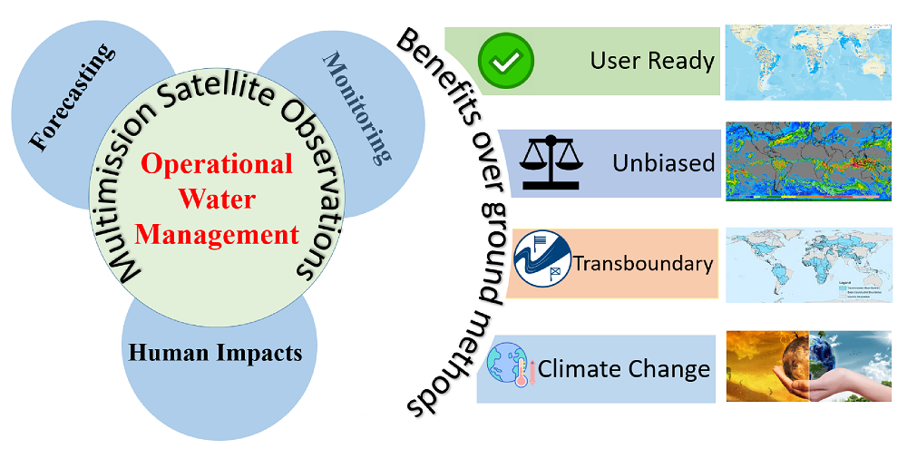
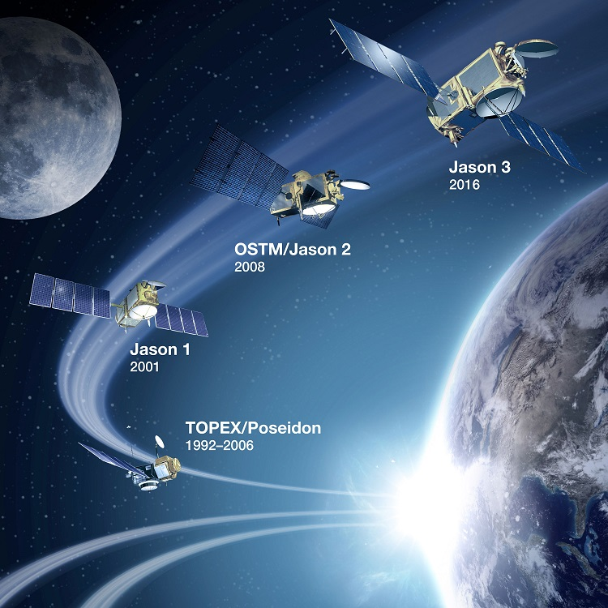
River Monitoring
In the monitoring component of my PhD research, a method was proposed to improve river height from the altimeter satellite. Here, river morphology information from ancillary satellites (Landsat and Sentinel 1-SAR) was extracted and then applied to get the altimeter height based on derived morphology. The accuracy of the method was tested over river locations with diverse hydraulic characteristics. It was found that the river-morphology based method can improve conventional altimter height estimation method in dynamically changing rivers.
River Height Visualizer
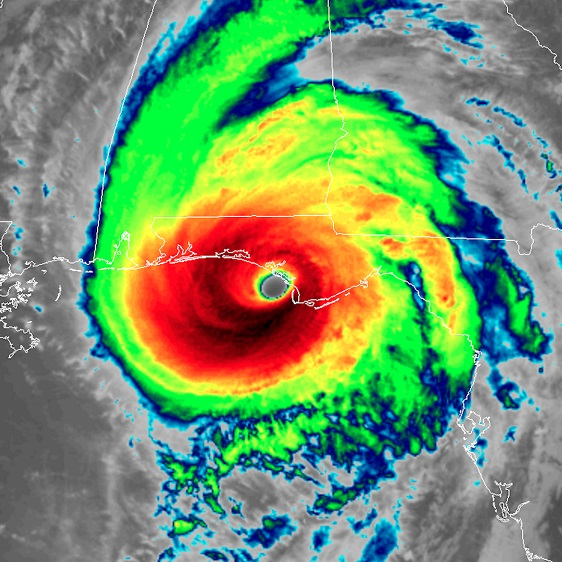
Flood Forecasting
As an application of satellite observations in forecasting component of water management, numerical weather prediction (NWP) model outputs in extreme event forecasting was studied. Nowcast and forecast meteorological parameters and land-surface variables were forced in a hydrologic-hydrodynamic framework to generate skillful forecasts for up to 5 days. The method was globally scalable and economically feasible for developing nations.
Flash Flood Forecasting System
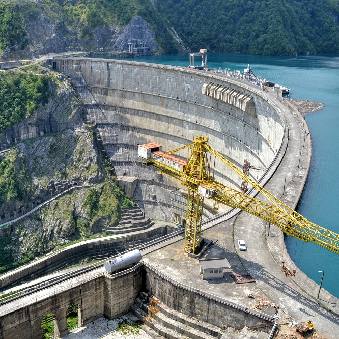
Human Impact Quantification
The third component of water management – quantification of human impacts was studied in this chapter. A global reservoir monitoring framework was built to investigate the impact of existing and proposed dams. A satellite data-based mass balance approach was used to quantify reservoir outflow. In the last (fourth) chapter, this framework will be used to study the impact of existing reservoirs as well as to optimize the benefits of future dams/reservoirs.
RAT FrameworkPublications and Conferences
Peer reviewed journals:
- Bose, I., Hossain, F., Eldardiry, H.,Ahmad, S.K., Biswas, N. K., Ashraf, M., Fatima, B., Iqbal, N., Hasan, F., Lee, H. and Aziz, M. (2020). Integrating Gravimetry Data with Thermal Infra-red Data from Satellites to Improve Efficiency of Operational Irrigation Advisory in South Asia, Water Resources Research (In review)
- Bhuiyan, M. A. E., Yang, F., Biswas, N. K., Rahat, S. H., & Neelam, T. J. (2020). Machine Learning-Based Error Modeling to Improve GPM IMERG Precipitation Product over the Brahmaputra River Basin. Forecasting, 2(3), 248-266. https://doi.org/10.3390/forecast2030014
- Beveridge, Claire, et al. "Stakeholder-driven development of a cloud-based, satellite remote sensing tool to monitor suspended sediment concentrations in major Bangladesh rivers." Environmental Modelling & Software (2020): 104843. https://doi.org/10.1016/j.envsoft.2020.104843
- Biswas, N.K., F. Hossain, M. Bonnema, A. Aminul, R. Biswas, A. Buiyan, A. Hossain. (2020). A computationally efficient flashflood early warning system for a mountainous and transboundary river basin in Bangladesh, Journal of Hydroinformatics (accepted)
- Biswas, N.K., F. Hossain, M. Bonnema, H. Lee, F. Chishtie (2020). A Global Reservoir Assessment Tool for Predicting Hydrologic Impact and Operating Pattern of Existing and Planned Reservoirs, Environmental Modeling and Software (In review)
- Biswas, N. K., Hossain, F., Bonnema, M., Okeowo, M. A., & Lee, H. (2019). An altimeter height extraction technique for dynamically changing rivers of South and South-East Asia. Remote Sensing of Environment, 221, 24-37.
- Hossain, F., Bonnema, M., Biswas, N.K., Ahmad, S., Duong, B., & Luong, N. D. (2019). When floods cross borders, satellite data can help, Eos, 100.
- Biswas, N. K., & Hossain, F. (2018). A scalable open-source web-analytic framework to improve satellite-based operational water management in developing countries. Journal of Hydroinformatics, 20(1), 49-68. https://doi.org/10.2166/hydro.2017.073
- Hossain, F., Biswas, N.K., Ashraf, M., & Bhatti, A. Z. (2017). Growing more with less using cell phones and satellite data. Eos, 98(10.1029).
- Hossain, F., Sikder, S., Biswas, N. K., Bonnema, M., Lee, H., Luong, N. D., ... & Long, D. (2017). Predicting water availability of the regulated Mekong river basin using satellite observations and a physical model. Asian Journal of Water, Environment and Pollution, 14(3), 39-48. https://doi.org/10.3233/AJW-170024
- Biswas, N. K., Paul, M., & Haider, M. R. (2015). Calibration and Sensitivity Analysis of a Hydrological Model for Jamunesswari River Basin of Bangladesh. Journal of Civil Engineering and Environmental Technology, (2), 200-205.
- Biswas, N.K., Jubair, S., & Rahman, M.M. (2014). Sustainability of an artificial dredged channel along the braided Jamuna River of Bangladesh, Journal of River Research Institute, 12(2), 59-67
- Biswas, N. K., & Ahammad, M. (2014). Application of CCHE2D mathematical model in the Gorai Offtake for two-dimensional simulation. International Journal of Surface and Groundwater Management, 1(1), 52-58.
- Biswas, N. K., & Hossain, F. (2020). A Global Reservoir Assessment Tool (RAT) for the global constructed and planned dams. AGUFM, 2020.
- Biswas, N. K., & Hossain, F. (2018). A Satellite Observations and Numerical Modelling Based Integrated Flash Flood Forecasting System for North-East Region of Bangladesh. AGUFM, 2018, H41I-2162.
- Biswas, N. K., & Hossain, F. (2016). Design and Performance Analysis of a Real-time Correction Application to the IMERG Estimated Precipitation in Ganges-Brahmaputra Basin, AMSFM, 2016.
- Hossain, M. S., Pk, S., Kafi, M. A. H., Mazumder, L. C., Sultana, T., & Biswas, N. K.(2015) Application of mathematical models to improve flood control, drainage, and irrigation facilities Shariatpur district, Bangladesh. 5th International Conference on Water & Flood Management 6-8 March 2015, IWFM, BUET, Bangladesh.
Non-peer reviewed publications:
Conference Proceedings:
Operational Models and Frameworks
I have been involved in developemnt of a number of operational and automated systems and web based framework for enhancing application of remote sensing in operational water management, flood forecasting and reservoir monitoring. Some selected operational systems directly related to my ongoing research are shown below. For a full list of frameworks I built, users are suggested to go to the following link.
Link to the operational systems of SASWE Research Group
Global Reservoir Assessment Tool
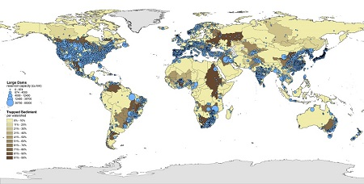The Reservoir Assessment Tool (RAT) represents a global and freely accessible system to monitor the operating pattern of world’s current and planned reservoirs and their impact on water availability. RAT is designed to address limitations faced by downstream stakeholders in developing regions of limited access to measurement data and upstream opaque transboundary reservoir policy. It is based on the core SASWE principle that ‘access to information on water is a fundamental right for all humans and nations.’ The development of RAT is always on-going. The developers do not accept any responsibility for wrongful application or faulty decision making based on RAT outputs.
Relevant UW News Link
Reservoir Assessment Tool Beta version website
Flash Flood Early Warning System
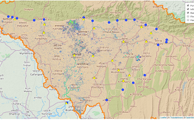This system was developed for a stakeholder nations asa an example. The flashflood and early warning system for the People’s Republic of Bangladesh (Ministry of Water Resources and Bangladesh Water Development Board-BWDB) was launched for trial in 2019 and now it is fully operational. The system, which is computationally efficient and forecasts inundation at 30 m resolution, was co-designed and co-developed in close collaboration with engineers and hydrologists of BWDB. After a successful trial in 2019, BWDB is expected to adopt it within its operational infrastructure and offer the flashflood warning as a service to about 40 million affected citizens on a SASWE developed smartphone app called LIQUID EARTH. Flashfloods in the Northeastern region strike around the harvest time of March-April for Boro rice. Skillful flashflood forecasting as a service to millions of farmers is therefore expected to have a positive impact on the food security of Bangladesh by minimizing flashflood damage to Boro rice that accounts for the lion share of annual rice production Bangladesh.
Flash Flood Forecasting and Early Warning System Server
Dynamic Width Based Altimeter derived River Height Visualizer
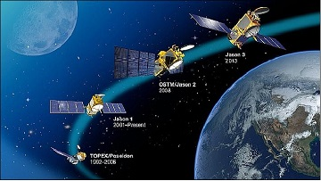Dynamic width based river height visualizer was built to provide river height information derived from altimeter satellite.
To get the altimeter height along the rivers at 166 virtual stations over South and South-East Asia, two different types of altimeter height extraction are shown in near real-time. One is the conventional method (based on a static or fixed river with). The other is based on latest river condition that is inferred from the most recent Sentinel-1 SAR imagery.
The SAR image helps identify the most likely river width around the time of the JASON-3 overpass, which is then used to extract height only over the track that has the highest confidence of having water. For rivers that frequently change in width and direction due to seasonal hydrology (monsoon) or human impacts (dams, barrages, diversions), such a SAR-based JASON-3 altimeter height extraction has been shown to improve JASON-3 height estimation accuracy for medium to large rivers (> 300 m). The analysis to infer latest river conditions is done in a cloud computing environment using Google Earth Engine, which makes the entire process very efficient and minimizes the need for downloading enormous amount of data. Our vision for the future is that such a system will cater to the strengths of the planned SWOT and NISAR missions, along with altimeters that will be flying by 2021, and rapidly provide users anywhere in the world, the best possible height estimate in near real-time to enable important decisions on the fly.
Data in Action: A River Runs Through It - Observation and Management story published by JPL, NASA.
Remote Sensing of Environment Publication Link
Jason 3 Height Visualizer Portal
South Asian Surface Water Modelling System
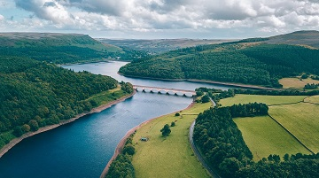South Asian Surface Water Modelling system (SASWMS) was desinged to provide realtime information on water resources for the South Asian river basins (i.e., Ganges, Brahmaputra, Meghna, Indus and Mekong). It is a classic example of how the power of information technology can help to improve water resources monitoring in ungaged and data poor regions or the regions with transboundary conflicts. A realtime correction system was embedded to the SASWMS which crawls more than a dozen website of public agencies to get the in-situ precipitation data. This data was then being used by the SASWMS to improve satellite based measurements. It provides several water monitoring parameters which can be very useful in instant decision making and policy formulations when data inaccessibility happens due to the transboundary nature of rivers.
Open-source web-analytic framework publication link
Link to SASWMS
LIS Atlas
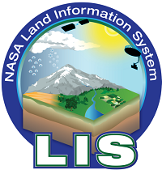The LIS Atlas is an interactive state-of-the-art web-based visualization system developed to facilitate the visualization of Land Information System (LIS)-generated outputs in a user-friendly framework. It was implemented with the capabilities to visualize LIS model output from multiple model domains and multiple configurations at different timescales on Google Maps. Additionally, the LIS Atlas has flexible capabilities to generate display outputs at various spatial and temporal scales. The LIS Atlas has also been designed to display outputs from the Land surface Verification Toolkit (LVT), including quantitative evaluations of model outputs compared to observations.
News on LIS Team Summer 2017 Intern
Link to the LISAtlas
Advanced Forecasting System of BWDB, Bangladesh
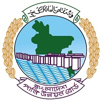Advanced forecasting system was developed for theor the People’s Republic of Bangladesh (Ministry of Water Resources and Bangladesh Water Development Board-BWDB) which can be used as an example of enhancement of capabilities of public agencies in using satellite data based methods to monitor transboundary rivers and waterbodies. It was developed for Ganges, Brahmaputra and Meghna Basin which flows through Bangladesh at the downstream. The system provides forecast of discharge/water level of all the major rivers for a 14 day lead time. It downloads satellite observed rainfall (GPM-IMERG) and other parameters along with Numerical Weather Prediction Model outputs to feed into Variable Infiltration Capacity (VIC) model to produce forecasts for Ganges-Brahmaputra-Meghna Basin.
Link to the frontend of the System
Mirror link hosted at UW as a Backup
Water Forecasting System of NUCE and NAWAPI, Vietnam
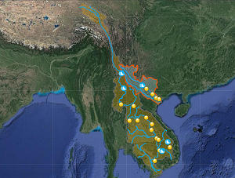During my stay of 14 days at Hanoi, Vietnam, the world's first transboundary reservoir monitoring system was developed to monitor upstream reservoirs of Mekong and Red River Basins. This monitoring system was developed solely based on satellite observations, it uses satellite observed rainfall and imagery information to calculate reservoir storage change, inflow, outflow and a operating rule curve (based on the storage calculated using long records). Initially the prototype was developed for National University of Civil engineering (NUCE) and National Center for Water Resources Planning and Investigation (NAWAPI).
Link to the NUMOS, NUCE, Vietnam
Link to the NAWAPI, Vietnam site
UW Mirror link to the system
Related publication link to EOS, AGU
Provision of Advisory on Necessary Irrigation, PCRWR, Pakistan
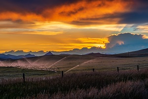The system was built to provide weather information to the marginal farmers to reduce the overwatering to the crops and to increase the productivity. Thw whole system was developed as an automated and integrated framework where different satellite data (i.e. GPM-IMERG precipitation, GFS forecast)were downloaded from different NASA servers and processed to calculate different weather variables which are necessary to the end-users to understand the necessity of irrigation in forecast period.
UW news on the PANI, Pakistan
Publication on AGU, EOS
More advanced systems built using the Pakistan system for India and Bangladesh later.
Education Details
PhD in Civil and Environmental Engineering
Hydrology and Hydrodynamics Track
Department of Civil and Environmental Engineering
University of Washington, Seattle, Washington
Thesis: Mainstreaming multimission satellite observations in operational water management

Masters in Civil and Environmental Engineering
Hydrology and Hydrodynamics Track
Department of Civil and Environmental Engineering
University of Washington, Seattle, Washington
Thesis: Development of Web Analytical Scalable Tools for Water Management based on Satellite-based Earth Observations
Experiences and Projects
Graduate Reseach Assistant SASWE Research Group Dept. of Civil and Environmental Engineering, University of Washington
- Developer of Global Reservoir Assessment Tool (RAT), a global and freely accessible framework to monitor the operating pattern of ~ 1600 reservoirs solely based on satellite observations.
- Cloud Computing (Google Earth Engine) based dynamic width based altimeter height visualizer to visualize river water levels from Jason 3 2015-Present) altimeter observations, related news covered by NASA JPL.
- Developed a skillful and computationally efficient flashflood and early warning system for the People’s Republic of Bangladesh (Ministry of Water Resources - Bangladesh Water Development Board) which is expected to have a positive impact on the food security of Bangladesh by minimizing flashflood damage.
- Developer of Advanced Weather, Climate and Satellite based Water Forecasting System, which is world’s first operational transboundary reservoir monitoring system based on earth observations.
- Web analytics based real-time correction system for satellite based GPM (IMERG) precipitation correction and streamflow correction.
- Core developer of Build-it-Yourself operational and fully automated web interface South Asian Surface Water Modelling System connected with complex back-end models and codes with user-friendly front-end GUI, related news from Earth Sciences Division, NASA.
- An end-to-end automated 8-day lead time inundation forecast system development based on altimetry based forecasting techniques, Hydrodynamic Model (MIKE 11) and GDAL, which rendered through smartphones.
Student Intern Hydrological Sciences Laboratory Goddard Space Flight CenterNational Aeronautics and Space Administration (NASA)
- Development of an interactive web based dynamic framework LIS-ATLAS to visualize Land Information System (LIS) Model and LVT outputs and quantitative evaluations for different spatial and temporal configurations under the FEWS-NET project.
Junior Engineer Flood Management Division Institute of Water Modelling (IWM), Dhaka, Bangladesh
- Different types of software, scripts and tool development, development and simulation of rainfall-runoff models, Hydrodynamic models using state of the art tools and software, end to end complete automated system development which ingests satellite based and in-situ measurements and though using rainfall-runoff models, hydrodynamic models, inundation mapping, optimizations, flood forecast inundation maps and hydrographs preparation, and dissemination though different mode of communication.
- Project: Data Collection, updating and validation of Regional Models and Bay of Bengal Model
Responsibilities: Development of a Rainfall-Runoff Model using HEC-HMS and Hydrodynamic model using HEC-RAS of North-West Regional Model. - Project: Feasibility & Hydrological Study of Tipaimukh Dam
Responsibility: Preparation of daily Flood inundation map of northe-east region of Bangladesh for the year 2005 from results of MIKE-11 Model using IDW interpolation Method of ArcGIS 10.1. - Project: Water Availability, Demand and Adaptation Option Assessment of Brahmaputra River Basin under Climate Change.
Responsibility: Converting NETCDF (.nc) files to Time series (.dfs0) data using ArcGIS 10.0 Model builder for three different scenarios: Base, RCP 4.5 and RCP 8.5 and MIKE 11 model result post process. - Project: Applying Remote Sensing Technology in Sustainable River Basin Management
Responsibility: Development of software for downloading GSMap rainfall data regularly and automatically from JAXA ftp server, processing rainfall data from grid level to catchment averaged data, MIKE NAM Model, MIKE Basin Model and Hydrodynamic model simulation step automation and preparation of flood Map to update flood raster to the WebGIS. - Project: Research and Prediction Modelling through Upgrading of Flood Forecasting System by Increasing Lead Time and Introducing Location Specific Flood Warning
Responsibility: Development of a tool for automatic estimation of boundary for existing FFWC FloodWatch Model from existing IWM Hydrodynamic Model. - Project: Implementation of JASON-2 Satellite Altimetry Based Flood Forecasting System at Flood Forecasting and Warning Center of Bangladesh Government.
Responsibility: Development of C# programming language based software for latest data download, data processing, boundary estimation, HD Model Simulation and 8-day lead time forecast generation in 13 stations of Bangladesh in a completely automated fashion.
Undergraduate Internship Flood Management Division Institute of Water Modelling (IWM), Dhaka, Bangladesh
- Rainfall-Runoff Model development of flash flood prone northeast watershed of Bangladesh using DHI-MIKE11 Model. Worked there as a requirement of fulfillment of B.Sc. in Engineering Degree.
Summer School, Workshops, Trainings
Summer School Participant, 2019 JPL Center for Climate Sciences, JPL, NASA
Technical Workshops
- Presenter, Hacker and Helper of SWOT Virtual Early Adopter Hackathon-2020 organized by NASA and the University of Washington to build deeper engagement with SWOT Early Adopters, who comprise SWOT's active user community
- Spent 14 days at Hanoi, Vietnam for the technical training workshop (July 1 2018 to July 14 2018) to mainstream decision support system for Vietnam on USAID Evidence to Action project for "Application of Satellite Gravimetry, Satellite Altimetry, and VIC Hydrological Model for Water Resource Management in Vietnam"
- Led a workshop entitled "Supporting Water Management in the Lower Mekong with Satellites" during 5-7th October 2017 at Hanoi, Vietnam supported by SERVIR-Mekong, funded by USAID in partnership with NASA, joined forces with USAID’s Partnerships for Enhanced Engagement in Research (PEER) with participants from various agencies in Vietnam, Cambodia, Lao PDR, Myanmar, and Thailand
NASA SERVIR Global News
Trainings as the lead
- Online IT training on how to build and maintain web-portals such as South Asian Surface Water Modelling System (http://depts.washington.edu/saswe) using non-proprietary (free) software to Pakistan Council for Research in Water Resources, Pakistan and Department of Hydrology and Meteorology, Nepal by University of Washington
- Training at University of Washington, Seattle on remote sensing application in water resources monitoring and prediction, hydrological model development and calibration, and Satellite Altimeter to the following stakeholder organizations of South and South-East Asia.
- Pakistan Council of Research in Water Resources (PCRWR), Pakistan
- National University of Civil Engineering (NUCE), Vietnam
- Department of Hydrology and Meteorology (DHM), Nepal
- National Center for Water Resources Planning and Investigation (NAWAPI), Vietnam
- Bangladesh Water Development Board, Bangladesh
- Institute of Water Modelling, Dhaka, Bangladesh
- Asian Disaster Preparedness Center, Thailand
Trainings as a participant
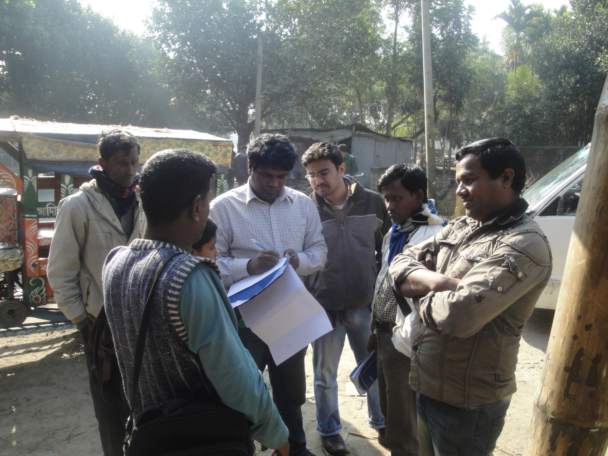
- Training on User Interface Development using C# Programming and SQL Server Database Management by Institute of Water Modelling
- Training on Environmental Impact Assessment & Environment Management Plan by the Department of Civil Engineering, BUET, Bangladesh
- Training on MIKE 11: Flood Mapping and Data Assimilation from the Academy by DHI, Delft Hydraulic Institute, Denmark.
- Training on MIKE 11(HD & NAM) by Institute of Water Modelling, Dhaka, Bangladesh
- Training on Basic Arc-GIS by Institute of Water Modelling, Dhaka, Bangladesh